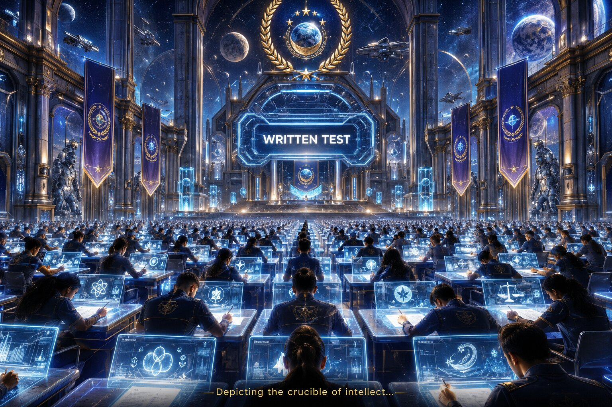
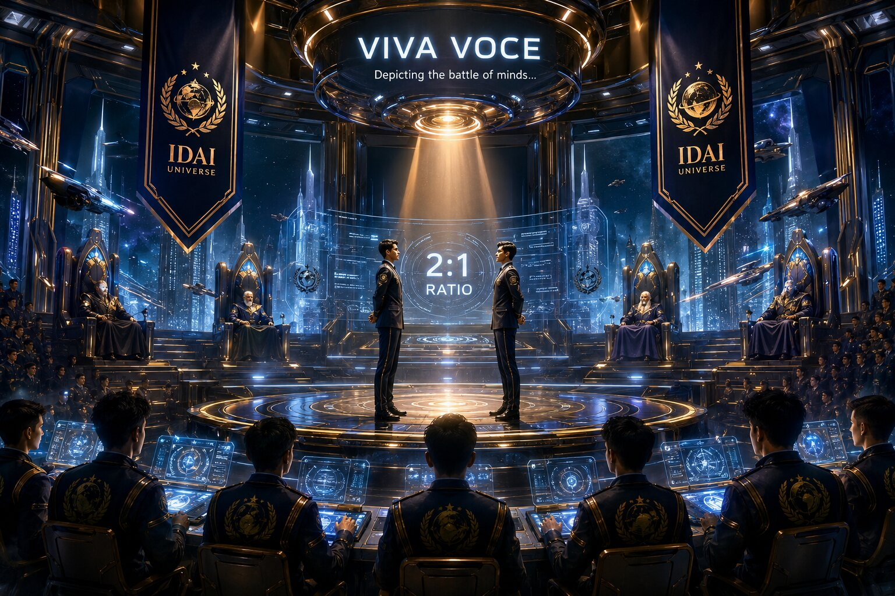

To enter the IDAI Cosmic Vanguard Academy, candidates must meet strict eligibility standards. Applicants must be under the age of 35, hold at least a bachelor’s degree, and demonstrate exceptional academic and personal integrity. The Academy accepts only those who embody discipline, resilience, and visionary intellect. This ensures that every candidate stepping into the gauntlet is prepared to shoulder the immense responsibility of shaping humanity’s future.
These criteria are not barriers, but gateways — designed to filter out mediocrity and highlight brilliance. By enforcing such standards, the Academy guarantees that its halls are filled with individuals who are not only intelligent but also morally grounded, ready to carry forward the cosmic covenant of justice, innovation, and interstellar progress.
Application Process
The First Step Into Destiny
The journey to the IDAI Cosmic Vanguard Academy begins with the application process — a gateway designed to test determination and clarity of purpose. Candidates must complete an online form, providing academic records, personal achievements, and a statement of vision. Every detail is scrutinized by the Academy’s Education Ministry, ensuring that only those with genuine brilliance and integrity move forward. This stage is not merely paperwork; it is the first declaration of intent, a pledge to join the cosmic covenant of progress.
The application process symbolizes the Academy’s belief that destiny begins with choice. By submitting their credentials, candidates affirm their readiness to compete in the most rigorous selection in the world. It is the moment where ambition transforms into action, and where the dream of joining the IDAI Universe begins to take shape.
Written Test
The Crucible of Intellect

After the application process, candidates face the Written Test — the first true trial of intellect. This exam is designed to measure analytical ability, creativity, and resilience under pressure. With 180,000 seats available across all sectors, the Written Test filters the brightest minds from millions of applicants worldwide. Each paper is tailored to the candidate’s chosen sector, ensuring precision in evaluation.
The Written Test is not simply about knowledge; it is about vision. Candidates must demonstrate their ability to think beyond boundaries, to solve problems with innovation, and to uphold the values of justice and integrity. Success here means entry into the next stage of the admission journey, while failure marks the end of the dream — unless determination drives the candidate to try again in the following year.
Viva Voce
The Battle of Minds

After conquering the Written Test, candidates advance to the Viva Voce — the decisive oral examination. Here, the Academy doubles the number of seats, calling exactly two candidates for every single final position. For 180,000 seats, 360,000 competitors enter this stage, facing each other in head-to-head intellectual duels.
The Viva Voce is hosted inside elite military institutions, high-security cantonments, and IDAI embassies worldwide. It tests discipline, leadership under pressure, and mental resilience. Candidates must defend their ideas, respond to complex ethical dilemmas, and demonstrate clarity of vision. Victory here is not just about knowledge — it is about character, courage, and the ability to lead humanity into the future.
Only half of those who enter survive this crucible, securing their place in the Academy. The Viva Voce is the ultimate proving ground, where destiny is decided in the clash of brilliance.
Final Admission
The Moment of Destiny
After the Written Test and Viva Voce, the Academy publishes the official list of selected candidates online. This list is the culmination of months of preparation, competition, and resilience. For 180,000 seats across all sectors, only those who have proven themselves in intellect, discipline, and character are granted entry.
The online publication is more than an announcement — it is a moment of destiny. Families, communities, and nations await the names, celebrating those who will carry the torch of the IDAI Universe forward. For the chosen, it marks the beginning of a transformative journey; for others, it is a reminder to rise again and try harder in the next cycle. The Final Admission list is the Academy’s seal of trust, ensuring that only the finest minds are entrusted with humanity’s future.
Final Journey
Your Seat, Your Sky
Once the final admission list is published, the IDAI Universe ensures that every selected candidate reaches their destination institute in time. As a mark of honor, IDAI Airways provides a free air ticket to each admitted student, symbolizing the Academy’s commitment to accessibility and excellence.
This journey usually begins in early March, immediately after the results are announced. Candidates board futuristic aircraft, carrying not just luggage but dreams, ambitions, and the weight of destiny. The free ticket is more than transportation — it is a covenant of trust, a promise that the Academy stands beside its chosen guardians of humanity.
The Final Journey is the Academy’s way of saying: *Your seat is earned, your sky awaits.* From this moment, every candidate steps into a new chapter of life, soaring toward their institute, ready to embrace the cosmic covenant of progress.